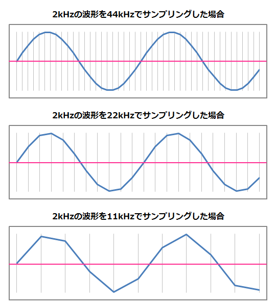
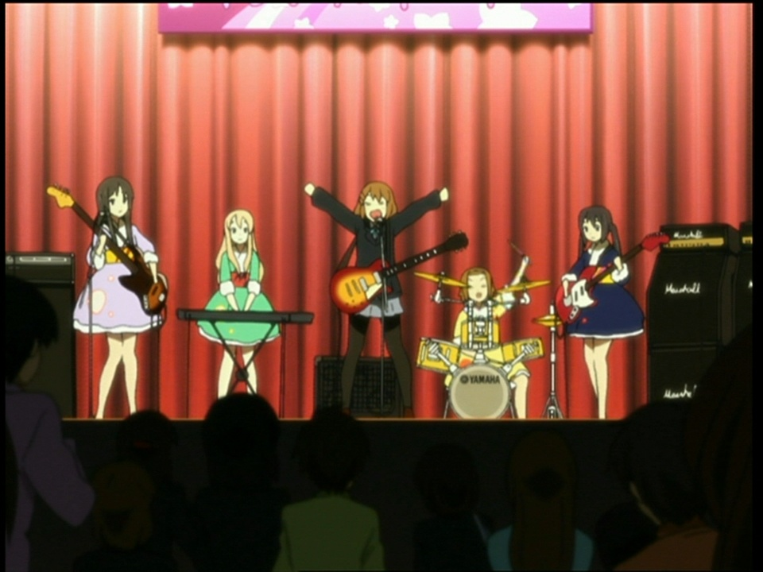
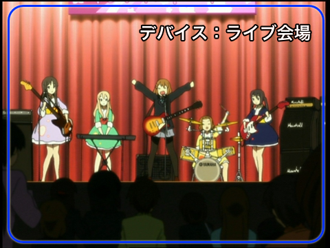
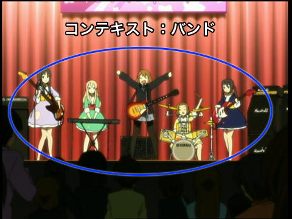
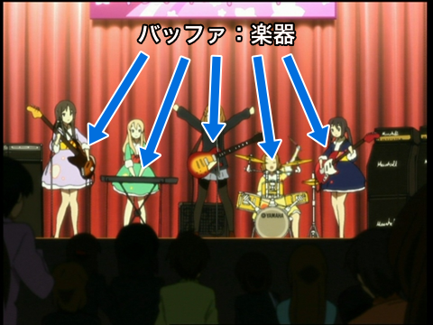
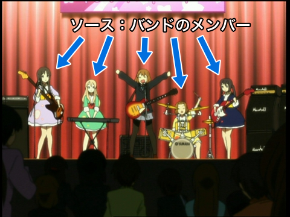
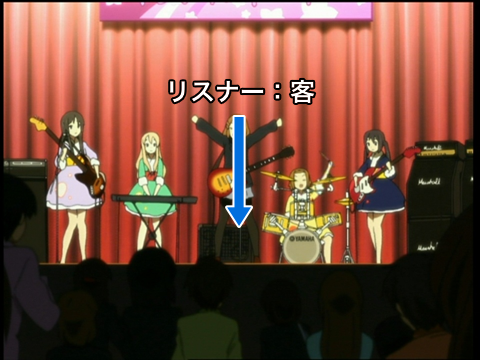
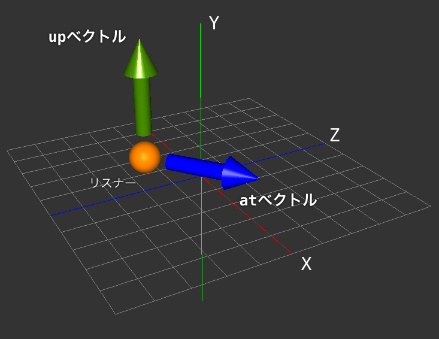

OpenAL入門
目次
1 デジタルでの音とは
現実世界では、音は空気の振動と捉えられています。ではパソコンやゲーム機で扱う 音 は、どう表されるのでしょうか。デジタルの世界では連続した値を扱えません。なので、音の振動を表す波形を時間軸で分割して数値に直します。この時の分割数を サンプリング数 といいます。CDでは波形を１秒間に44100分割して数値に直しています。

図1: 音の波形を分割した様子
このとき、上下の振幅が 音量 を表しており、「量子化ビットが16ビット」というと、波形データの情報が１サンプルあたり16ビットで表されており、+32768~-32767の幅の振幅で波形をデジタル化しているという意味になります。
パソコンの世界ではWAVやMP3にOgg Vorbisなど、様々なサウンド形式が存在しますが、最終的には音の波形データ(リニアPCM形式)にがハードウェアに流し込まれて音が再生されるという仕組みになっています。
2 OpenALとは

図2: OpenALの概略 ©かきふらい・芳文社/桜高軽音部
「OpenAL(オープンエーエル)」とはプログラムからサウンドを扱う為の仕組みです。プログラマがハードの違いを意識する事無くサウンドを扱えるように設計されており、Windows、OSX、iPhone、Android、PlayStation3、Wiiなど、さまざまな機器に移植されています。
- 長所
- サウンドに関する専門的な知識が無くても利用出来る。
- OpenALが提供されている環境であれば同じように音が鳴る。
- 三次元空間内の音の定位やドップラー効果をOpenALが計算してくれる。
- プログラムから発音を命じてからの遅れが非常に少ない。
- 短所
- AIFF形式とかWAV形式とかMP3形式とか、サウンドのフォーマットについての規定が無い。ファイルから読み込んだデータを自分でリニアPCM形式に変換しなければならない。
- iPhoneやAndriodは圧縮形式のサウンド(AAC、MP3、Ogg Vorbis)をハードウェアでサポートしているが、それが使えない。
- MIDIを扱えない。
3 OpenALをざっくり紹介
プログラムで音を扱うOpenALですが、そんなに複雑なつくりではありません。大きく分けると ５つの仕組み でできています。
デバイス
デバイスはプログラムから指示を出すサウンドハードウェアを表します。これはライブ会場に該当する役です。パソコンに繋がった複数のハードウェアから「どの機器を使うのか」を選ぶ時に利用します。

図3: デバイスはライブ会場を指し示す
コンテキスト
コンテキストは発音された音を１つにまとめる仕組みを表します。これはバンドに該当する役です。時に複数のコンテキストを用意して複雑な音響効果をミックスします。

図4: コンテキストはバンドを指し示す
バッファ
バッファは波形データを格納する仕組みです。これは楽器に該当する役です。様々な種類の波形を格納するために、バッファをたくさん用意することとなります。

図5: バッファは楽器を指し示す
ソース
ソースはバッファに格納された波形を発音する仕組みです。これは奏者に該当する役です。同時にたくさんの音を鳴らしたい場合にはたくさんのソースを用意します。

図6: ソースは奏者を指し示す
リスナー
リスナーはソースからの発音を聴く位置を表します。これは客に該当する役です。OpenALでは 立体音響 の仕組みがあり、そこで大活躍します。

図7: リスナーはライブ客の一人を指し示す
OpenALは、以上５つの仕組みの使い方を覚えれば、OSごとの違いを気にする事無く音を鳴らす事ができるようになります。
4 初期化と後始末
５つの仕組み のうち、 デバイス と コンテキスト を操作します。以下のサンプルコードではシステム既定のデバイスを使うように初期化しています。ゲームの実装であれば、これでほぼ事足ります。
#include <OpenAL/al.h> // OpenALのヘッダ #include <OpenAL/alc.h> // OpenALのヘッダ int main() { // OpenALの初期化 // OpenALがOS標準オーディオデバイスを使うよう指示 ALCdevice* device = alcOpenDevice(nullptr); // オーディオをレンダリングするためのコンテキストを生成 ALCcontext* context = alcCreateContext(device, nullptr); // 生成したコンテキストを操作対象にする alcMakeContextCurrent(context); // // 色々と操作 // // OpenALの後始末 // 操作対象のコンテキストを解除 alcMakeContextCurrent(nullptr); // コンテキストを破棄 alcDestroyContext(context); // デバイスを閉じる alcCloseDevice(device); }
5 音を鳴らす
波形を用意して音を鳴らす場合、以下のようなコードになります。OpenALでは波形データのフォーマットに関する既定がないので、WAV形式やMP3形式のデータを扱う場合、自前でリニアPCMデータを取り出す必要があります。
// Windowsではいの一番にこの定義が必要 // minとmaxがマクロ定義で使われており、 // std::minやstd::maxが使えない #define NOMINMAX #include <OpenAL/al.h> #include <OpenAL/alc.h> #include <cmath> #include <limits> #include <thread> int main() { // OpenALの初期化 ALCdevice* device = alcOpenDevice(nullptr); ALCcontext* context = alcCreateContext(device, nullptr); alcMakeContextCurrent(context); // 一秒ぶんのサイン波(440Hz)を生成 const size_t pcm_freq = 44100; const float key_freq = 440.0; ALshort pcm_data[pcm_freq]; for (size_t i = 0; i < pcm_freq; ++i) { pcm_data[i] = std::sin(key_freq * M_PI * 2.0 * i / pcm_freq) * std::numeric_limits<ALshort>::max(); } // バッファの生成 ALuint buffer_id; alGenBuffers(1, &buffer_id); // 用意したサイン波をバッファにコピー alBufferData(buffer_id, AL_FORMAT_MONO16, // モノラル、量子化ビット数:16 &pcm_data[0], // リニアPCM形式データが格納されている場所 pcm_freq * sizeof(ALshort), // サイズ(バイト数) pcm_freq); // サンプリングレート // ソースの生成 ALuint source_id; alGenSources(1, &source_id); // ソースに再生したいバッファを割り当てる alSourcei(source_id, AL_BUFFER, buffer_id); // ソースの再生開始 alSourcePlay(source_id); // 2秒待つ std::this_thread::sleep_for(std::chrono::seconds(2)); // ソースの破棄 alDeleteSources(1, &source_id); // バッファの破棄 alDeleteBuffers(1, &buffer_id); // OpenALの後始末 alcMakeContextCurrent(nullptr); alcDestroyContext(context); alcCloseDevice(device); }
１つのバッファを多くのソースに割り当てて鳴らすのも、もちろんできます。
// ソースをまとめて４つ生成 ALuint source_id[4]; alGenSources(4, &source_id[0]); // バッファをまとめて５つ生成 ALuint buffer_id[5]; alGenBuffers(5, &buffer_id[0]); // ソースの破棄 alDeleteSources(4, &source_id[0]); // バッファの破棄 alDeleteBuffers(5, &buffer_id[0]);
6 再生時の細かな指定
ソースに対しては、再生のために各種指示を行えます。以下、よく使うであろう指示です。
// 停止 alSourceStop(source_id); // 一時停止(この後、再生すると続きからになる) alSourcePause(source_id); // 音量変更(0~1) ALfloat gain_value = 0.5; alSourcef(source_id, AL_GAIN, gain_value); // 再生ピッチ変更(0~) ALfloat pitch_value = 0.2; alSourcef(source_id, AL_PITCH, putch_value); // ループ再生 ON/OFF ALint is_looping = AL_TRUE; // or AL_FALSE alSourcei(source_id, AL_LOOPING, is_looping); // ソースの状態を調べる // AL_INITIAL 未再生状態 // AL_PLAYING 再生中 // AL_PAUSED 一時停止中 // AL_STOPPED 停止中 ALint state; alGetSourcei(source_id, AL_SOURCE_STATE, &state); if (state != AL_PLAYING) { // 再生が止まっている } // 現在の再生位置(秒) ALfloat current_time_sec; alGetSourcef(source_id, AL_SEC_OFFSET, ¤t_time_sec);
7 立体音響
OpenALで立体音響(音の定位を空間座標で定義する)を実現するのは実に簡単です。座標系はOpenGLに準拠。ただし、波形データを モノラル で用意する必要があります。指定する必要があるのは以下の２つ。
- リスナーの位置を指定
- リスナーの向きを指定
- ソースの位置を指定
// リスナーの位置を(1.0, 0.0, 0.0)へ移動 // リスナーはコンテキストごとに１つ、存在する ALfloat listener_pos[] = { 1.0, 0.0, 0.0 }; alListenerfv(AL_POSITION, listener_pos); // リスナーの向きをat、upベクトルで指定 // atベクトル float at_x = 0.0; float at_y = 0.0; float at_z = 1.0; // upベクトル float up_x = 0.0; float up_y = 1.0; float up_z = 0.0; ALfloat listener_orientation[] = { at_x, at_y, at_z, up_x, up_y, up_z }; alListenerfv(AL_ORIENTATION, listener_orientation); // ソースの位置を(0.0, 0.0, 1.0)へ移動 ALfloat source_pos[] = { 0.0, 0.0, 1.0 }; alSourcefv(source_id, AL_POSITION, source_pos);

図8: atベクトルとupベクトルの概略
ソース再生中にリスナーやソースの位置を変更した場合にも即座に変更が反映されます。距離の単位はアプリ側に任されています。
8 ドップラー効果
救急車のサイレンの音。近づいてくると高い音になって、離れて行くと低い音になっていきます。これがドップラー効果。OpenALではこの効果もエミュレートしています。ソースとリスナー、それぞれの移動速度を指定するだけで実現できます。
// リスナーの移動速度を指定 ALfloat listener_velocity[] = { 0.0, 0.0, 1.0 }; alListenerfv(AL_VELOCITY, listener_velocity); // ソースの移動速度を指定 ALfloat source_velocity[] = { 1.0, 0.0, 0.0 }; alSourcefv(source_id, AL_VELOCITY, source_velocity);
移動速度の時間や距離の単位の基準はありません。計算用の基準値が与えられていますが(音速 m/sec)、アプリ側で適当な値に設定するのがよさそうです。
// ドップラー効果計算に使う基準（比例）速度を変更する // 初期値は343.3 void alSpeedOfSound(ALfloat speed);
9 キューイング
再生時間が５分ある波形データをそのままOpenALのバッファに割り当てると、大量のメモリが必要になりますし、初期化の時間も長くなってしまいます。その場合、波形データを少しずつバッファに割り当てながら再生する ストリーミング という手法を採ることになります。
OpenALの場合 キューイング という仕組みを使ってストリーミング再生を行います。処理の流れはだいたいこんな感じ。
- バッファを複数用意
- ソースにバッファをキューイング
- 再生開始
- 再生の完了したバッファを再キューイング
- ↑波形データが無くなるまで続ける
以下がそのサンプルコードです。このコードではあらかじめ作っておいた４つの音程の違うバッファで、順番にキューイングを行っています。
#include <OpenAL/al.h> #include <OpenAL/alc.h> #include <cmath> #include <limits> #include <vector> int main() { // OpenALの初期化 ALCdevice* device = alcOpenDevice(nullptr); ALCcontext* context = alcCreateContext(device, nullptr); alcMakeContextCurrent(context); // バッファの生成 const int queue_buffer_num = 4; ALuint buffer_id[queue_buffer_num]; alGenBuffers(queue_buffer_num, &buffer_id[0]); for (size_t i = 0; i < queue_buffer_num; ++i) { // 一秒ぶんのサイン波を生成 const size_t pcm_freq = 44100; const float key_freq = 440.0 * (i + 1); ALshort pcm_data[pcm_freq]; for (size_t h = 0; i < pcm_freq; ++i) { pcm_data[h] = std::sin(key_freq * M_PI * 2.0 * h / pcm_freq) * std::numeric_limits<ALshort>::max(); } // サイン波をバッファにコピー alBufferData(buffer_id[i], AL_FORMAT_MONO16, // ステレオ16bit or モノラル16bit &pcm_data[0], // リニアPCM形式データが格納されている場所 pcm_data.size() * sizeof(ALshort), // サイズ(バイト数) pcm_freq); // サンプリングレート } // ソースの生成 ALuint source_id; alGenSources(1, &source_id); // バッファをキューイング alSourceQueueBuffers(source_id, queue_buffer_num, &buffer_id[0]); // ソースの再生開始 alSourcePlay(source_id); while (1) { // 再生の終わったバッファがあるか?? int processed; alGetSourcei(source_id, AL_BUFFERS_PROCESSED, &processed); if (processed > 0) { // 再生の終わったバッファを再利用 std::vector<ALuint> unqueue_buffer_id(processed); alSourceUnqueueBuffers(source_id, processed, &unqueue_buffer_id[0]); // 再キューイング alSourceQueueBuffers(source_id, processed, &unqueue_buffer_id[0]); } } // ソースの破棄 alDeleteSources(1, &source_id); // バッファの破棄 alDeleteBuffers(queue_buffer_num, &buffer_id[0]); // OpenALの後始末 alcMakeContextCurrent(nullptr); alcDestroyContext(context); alcCloseDevice(device); }
MP3やOgg Vorbisでのストリーミングを行う場合、適時キューイングするバッファの内容を書き換えてゆく事になります。なお、OpenALでは再生終了時シグナルやコールバックの仕組みは用意されていませんので、今サンプルのように、自前でソースの状態をポーリングする必要があります。
10 音声入力
マイク入力などの音声入力も、OpenALには用意されています。
#include <OpenAL/al.h> #include <OpenAL/alc.h> #include <vector> int main() { // OpenALの初期化 // OpenALがOS標準オーディオデバイスを使うよう指示 // FIXME:OSX、iOSだとこれは必要ない ALCdevice* device = alcOpenDevice(nullptr); // 録音デバイスを開く const int SAMPLING_RATE = 44100; // 入力波形のサンプリングレート const int SAMPLE_BUFFER_SIZE = 1024; // 波形を蓄えておくバッファのサイズ ALCdevice* capture_device = alcCaptureOpenDevice(nullptr, SAMPLING_RATE, AL_FORMAT_MONO16, SAMPLE_BUFFER_SIZE); // 録音開始 alcCaptureStart(capture_device); while (1) { // 録音されたデータ量を調べる ALint sample; alcGetIntegerv(capture_device, ALC_CAPTURE_SAMPLES, sizeof(sample), &sample); if (sample > 0) { // 録音されたデータを受け取る std::vector<ALshort> buffer(sample); alcCaptureSamples(capture_device, (ALCvoid*)&buffer[0], sample); } } // 録音停止 alcCaptureStop(capture_device); // OpenALの後始末 alcCaptureCloseDevice(capture_device); alcCloseDevice(device); }
11 もっと詳しく
今回ざっくりと紹介したOpenAL。より突っ込んだ使い方をしたくなったら仕様書の出番です。
- OpenAL公式 ⇒http://www.openal.org/
OpenALの仕様書、開発ガイド、Windows向けのSDKが入手できます。 - OpenAL Soft ⇒http://kcat.strangesoft.net/openal.html
OpenALのリポジトリから分岐して開発を続けているサイト。現在、Windows向けのOpenALライブラリや全ソースコードを入手できる数少ないサイトのうちの１つです。 - OpenAL 1.1 Specification and Reference ⇒http://www.memorize-being.net/releases/oal11spec-ja/
有志の方によるOpenAL仕様書の邦訳。大変な労力を掛けて翻訳されており、頭の下がる思いです。拙者もこの仕様書を読みながらOpenALの操作を習得してゆきました。